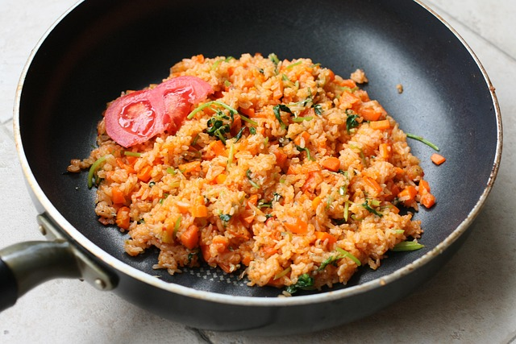

Riz Sauté

Description
Un bon plat de riz sauté avec pleins d'obstacles à l'intérieur
Un des plats les plus populaires au Cameroun
Ingredients
- Du riz blanc
- Du sel
- De l'eau
- Des oignons
- De la tomate
- Si possible, ajouter du poisson fumé, de la viande etc...
Steps
- Faire revenir les oignons avec du sel et un peu d'huile
- Ajouter la tomate
- Puis rajouter le riz
- Rajouter de l'eau une fois que tout aura été bien grillé
-
Ajouter nos ingredients supplémentaires (poisson fumé, viande, etc.. et
du sel à notre convenance)
-
Laisser le tout cuire jusqu'à ce qu'il n y ait plus d'eau dans la
marmite
Home